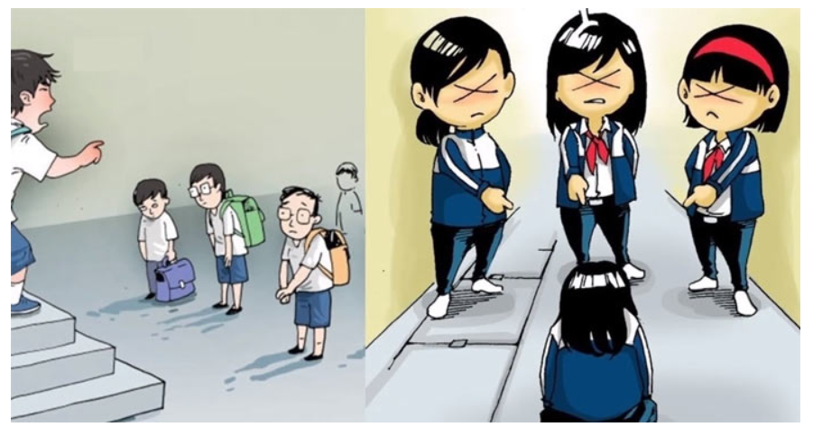

Tình trạng bạo lực học đường hiện nay có chiều hướng gia tăng và diễn biến hết sức phức tạp. Vấn nạn bạo lực học đường đã trở thành tinh tức gây nhức nhối của ngành giáo dục và toàn xã hội. Bạo lực học đường hiện nay đang trở thành điểm nóng đáng được quan tâm của nhiều phụ huynh, thầy cô và nhà trường, là nỗi trăn trở của toàn xã hội. Hiện tượng bạo lực không hải là hiện tượng mới, xong thời gian gần đây hiện tượng này xẩy ra liên tục hơn trong các trường học bộc lộ tính chất nguy hiểm và nghiêm trọng hơn. Điều đáng lo ngại là lý do dẫn đến bạo lực đôi khi rất đơn giản như va chạm trong lúc chơi đùa, trên đường đi học, mâu thuẫn nói xấu nhau trên các diễn đàn, mạng xã hội,…Theo số liệu được Bộ Giáo dục và đào tạo (GD- ĐT) đưa ra gần đây nhất, trong một năm học, toàn quốc xảy ra gần 1.600 vụ việc học sinh đánh nhau ở trong và ngoài trường học (khoảng 5 vụ/ngày). Cứ khoảng trên 5.200 học sinh (HS) thì có một vụ đánh nhau; cứ hơn 11.000 HS thì có một em bị buộc thôi học vì đánh nhau; cứ 9 trường thì có một trường có học sinh đánh nhau. Đáng lo ngại hơn, theo thống kê của Bộ Công An mỗi tháng có hơn 1.000 thanh thiếu niên phạm tội. Trước kia: tội phạm giết người trong độ tuổi từ 30 đến dưới 45 chiếm số lượng cao nhất. Bây giờ giảm còn 34% so với 41% của độ tuổi 18 đến dưới 30 (độ tuổi từ 14 đến dưới 18 chiếm đến 17%). Những số liệu đó thực sự trở thành hồi chuông cảnh báo cho các gia đình, nhà trường và xã hội, cần quan tâm và có biện pháp thích hợp để đẩy lùi vấn nạn này. Do đó việc tuyên truyền về thực trạng đáng báo động của bạo lực học đường, là hết sức cần thiết và thiết thực.
1.Khái niệm
- Bạo lực học đường là những hành vi thô bạo, ngang ngược, bất chấp công lý, đạo lý, xúc phạm trấn áp người khác gây nên những tổn thương về tinh thần và thể xác diễn ra trong phạm vi trường học.
- Bạo lực học đường bao gồm các hành vi bạo lực về thể chất, gồm đánh nhau giữa các học sinh hoặc các hình phạt thể chất của nhà trường; bạo lực tinh thần, bao gồm cả việc tấn công bằng lời nói; bạo lực tình dục, bao gồm hiếp dâm và quấy rối tình dục; các dạng bắt nạt bạn học; và mang vũ khí đến trường.
2.Thực trạng
Tình trạng bạo lực trong trường học đã và đang diễn ra nóng bỏng trên khắp thế giới ở tất cả những cấp học, lớp học khác nhau. Bạo lực học đường không chỉ sảy ra ở học sinh nam mà còn cả ở học sinh nữ; không chỉ giữa học sinh với học sinh mà còn có bạo lực giữa học sinh với giáo viên và giáo viên với học sinh.
3.Hậu quả
*Ảnh hưởng dến bản thân học sinhGây ra những hậu quả nghiêm trọng về mặt thể xác.
Tồi tệ hơn khi không ít vụ bạo lực đã cướp đi sinh mạng của những học sinh vô tội để lại sự thiệt thòi, đau đớn không chỉ về mặt thể xác mà cả tinh thần cho học sinh và gia đình. Những HS bị bạo lực, nhất là bạo lực về tinh thần, bạo lực ngôn ngữ thường cảm thấy bị tổn thương, chán nản, lo âu, cô đơn, suy sụp… Sự sợ hãi hoặc nỗi ám ảnh. Thậm chí, tình trạng này có thể kéo dài suốt cuộc đời. Các em không dám ra ngoài chơi hoặc đến trường, không thể tập trung vào học hành. Kể cả những em chỉ chứng kiến chứ không tham gia hành vi bạo lực cũng bị ảnh hưởng. Chứng kiến những hành vi bạo lực khiến các em cảm thấy sợ hãi, và nếu thấy những kẻ gây ra bạo lực không bị trừng trị thì những em chứng kiến cũng có thể hùa theo số đông, ủng hộ hành vi này, và có nhiều khả năng trở thành kẻ có hành vi bạo lực trong tương lai. Những hậu quả mà bạo lực học đường gây ra kể cả thể xác hay tinh thần cũng đều trực tiếp ảnh hưởng đến công việc học tập cũng như tương lai của học sinh nếu không được can thiệp kịp thời. Với những ảnh hưởng về mặt sức khỏe cùng với tâm lý lo lắng, căng thẳng, sợ hãi, học sinh không thể học tập với kết quả tốt nhất có thể. Thậm chí, sự căng thẳng quá mức về mặt tâm lý có thể buộc học sinh kết thúc việc học của mình, hoặc cũng có thể vì gây ra hành vi bạo lực mà học sinh phải nhận kỷ luật đuổi học. Từ đó, tương lai của các em rẽ sang một bước ngoặt khác không mấy khả quan. Đặc biệt, những đứa trẻ có hành vi bạo lực, lạm dụng quyền hành từ khi còn nhỏ, khi lớn lên có thể mắc phải những hành vi tội ác nhiều hơn những đứa trẻ khác. Trẻ em liên lụy vào hành vi bạo lực dù ở vai trò này hay vai trò kia cũng đều có nguy cơ lạm dụng rượu, thuốc lá, và các loại ma túy.
*Ảnh hưởng đến gia đìnhKhông khí và cuộc sống gia đình bị xáo trộn, căng thẳng, lo lắng.
* Ảnh hưởng đến nhà trườngHành vi bạo lực không chỉ tác động xấu đến nạn nhân mà còn khiến không khí trường học trở nên nặng nề, căng thẳng với nỗi sợ hãi, bất an luôn bao trùm. Ngoài ra, những hành vi bạo lực học đường của học sinh sẽ trở thành nỗi bất an của phụ huynh khi gửi con em mình đến trường, làm mất đi ý nghĩa của môi trường giáo dục lạnh mạnh trong sáng.
*Ảnh hưởng đến xã hộiẢnh hưởng đến những nét văn hóa truyền thống, những chuẩn mực đạo đức quý giá: Giờ đây có những học trò ngang nhiên cãi lại thầy, cô giáo. Con cái cãi lại bố mẹ. Bạn bè đánh đấm, xảy ra khá thường xuyên. Chính những hành động ấy đã càng làm lu mờ những nét văn hóa truyền thống của xã hội, thể hiện một sự suy đồi về mặt đạo đức và sự sai lệch về mặt hành vi một cách đáng báo động.
4.Cách phòng tránh bạo lực học đường
* Đói với học sinh– Tích cực rèn luyện kĩ năng sống, ngoan ngoãn lễ phép với ông bà, bố mẹ, với thầy cô giáo. – Chấp hành tốt nội quy trường lớp. – Tránh xa bạo lực. nói không với bạo lực. – Nếu thấy hiện tượng bạo lực phải kịp thời báo ngay cho nhà trường, thầy cô giáo hoặc cơ quan có thẩm quyền để kịp thời can thiệp và xử lí. – Học cách kiềm chế cảm súc. – Tích cự tham gia vào các hoạt động tình nguyện mà nhà trường tổ chức nhằn tăng tính thiện và tính hướng thiện trong con người các em.
* Đối với nhà trường và các cơ quan quản lý giáo dục:– Tích cực hoàn thiện bộ rèn luyện kỹ năng sống và đưa bộ môn dạy kỹ năng sống vào trong nhà trường. – Tổ chức các hoạt động sân trường, hoàn động tình nguyeenjj mang tính hướng thiện và định hướng nhân cách cho học sinh, giúp học sinh phát huy những đức tính tốt đẹp trong bản thân. – Có hình phạt và cách giáo dục nghiêm khắc, phù hợp đối với những học sinh gây ra bạo lực, và có hình thức hỗ trợ kịp thời đối với nạn nhân của các vụ bạo lực. – Tổ chức tuyên truyền tác hại và cách phòng tránh bạo lực học đường đói với giáo viên và học sinh. – Phối hợp với gia đình và cơ quan đoàn thể đóng trên địa bàn xã trong công cuộc phòng tránh bạo lực học đường.
* Đối với giáo viên– Thường xuyên quan tâm, theo dõi và nắm bắt tình hình của các em học sinh trong lớp mình chủ nhiệm hoặc tham gia giảng dạy đặc biệt là giáo viên chủ nhiệm và giáo viên tham gia dạy kỹ năng sống. – Có biện pháp can ngăn giáo dục kịp thời đối với hiện tượng có nguy cơ dân đến bạo lực đối với học sinh trong lớp chủ nhiệm haowjc tham gia giảng dạy. – Tích cực tổ chức các hoạt động sân trường, hoạt động tập thể trong giờ hoạt động sân trường hoặc trong tiết sinh hoạt, nhăm tăng tình cảm của các em học sinh trong cùng lớp, cùng trường. – Tạo môi trường học tập và giảng dạy trong sáng lành mạnh. – Phối hợp với gia đình và nhà trường để quan tâm và hỗ trợ kịp thời những khó khăn vướng mắc của học sinh.
* Đối với gua đình– Bố mẹ cần tạo ra một môi trường sống lành mạnh, yêu thương cho con cái – Đồng thời phối hợp chặt chẽ với nhà trường và giáo viên chủ nhiệm để kịp thời nắm bắt tình hình học tập của con em mình tại trường học.